半導體微波與功率元件
15.0 本章預覽
前面十四章建立了半導體物理的完整基礎——從晶體結構、載子統計、輸運現象，到 pn 接面、BJT、MOSFET。但這些分析都在「正常條件」下：中等電壓、中等電流、中等頻率。本章問一個更難的問題：當電場極強、頻率極高（微波波段）、電流極大、寄生效應極重時，半導體物理會變成什麼樣？
答案是將前面學過的穿隧（Ch8 §8.5）、速度飽和（Ch5 §5.1.4）、撞擊游離（Ch12 §12.4.6）、寄生 BJT（本章 §15.5.3）、再生正回授等機制推至極限。本章就是這些物理在工程前沿的會合點。
本章分為兩大區塊：前半（§15.1–§15.3）討論三種產生微波振盪的半導體元件——Tunnel Diode、Gunn Diode、IMPATT Diode——它們的共同特徵是需要負微分電阻（NDR）才能振盪，但 NDR 的物理來源截然不同。後半（§15.4–§15.6）討論功率半導體元件——Power BJT、Power MOSFET、Thyristor——它們的核心挑戰是耐壓、大電流、散熱、以及安全操作區（SOA）的邊界。
2. Tunnel diode：重摻雜 $p^+n^+$→空乏區 ∼50 Å→量子穿隧→$I$–$V$ 呈 N 形，$f_r\propto1/(R_{min}C_j)$
3. Gunn diode：GaAs 能谷轉移→電子從高遷移率 Γ 谷轉到低遷移率 L 谷→負微分遷移率→domain 振盪
4. Gunn domain：$\tau_d<0$→空間電荷指數增長→以 $v_d$ 渡越→$f=v_d/L$（∼10 GHz at $L=10$ μm）
5. IMPATT：撞擊游離產生載子→渡越時間延遲→動態負電阻→$f=v_s/(2L)$，效率 ∼15%
6. 功率 BJT：垂直結構→耐高壓，但 $\beta$ 低（寬基極）→Darlington pair 補償
7. SOA（安全操作區）：$I_C$、$V_{CE}$、$P_T$ 的三重限制→二次崩潰是最終邊界
8. 功率 MOSFET：DMOS/VMOS→垂直電流→$R_{on}=R_{ch}+R_{drift}+...$，寄生 BJT 可能鎖存
9. SCR（閘流體）：pnpn 四層→再生正回授 $I_A=I_{C0}/[1-(\alpha_1+\alpha_2)]$→$\alpha_1+\alpha_2=1$ 時觸發導通
10. 微波+功率元件的共同主題：寄生、熱、SOA——高場、高頻、大電流下，所有前面章節的理想假設都要重新檢視
15.1 穿隧二極體 (Tunnel Diode / Esaki Diode)
量子穿隧作為主導電流機制
穿隧二極體是唯一完全依賴量子穿隧作為主導電流機制的兩端元件。Ch2 §2.3.4 建立了穿隧的基本量子力學：當位障寬度極窄（∼nm）時，電子波函數可穿透經典禁區。Ch8 §8.5 簡介了穿隧在 pn 接面中的應用，但本章從微波振盪的角度深入分析：NDR 如何產生、等效電路參數如何決定振盪頻率上限。
物理結構與能帶圖
穿隧二極體的核心特徵是 p 側和 n 側都極重摻雜（degenerately doped，$N_a, N_d > 10^{19}\ \text{cm}^{-3}$）。這導致兩個關鍵後果：① 空乏區極窄——$W \approx 50\ \text{Å} = 5 \times 10^{-7}\ \text{cm}$，遠小於普通 pn 接面的 ∼0.1–1 µm；② Fermi 能階分別進入價帶（p 側）和導帶（n 側），使得 n 側導帶中的電子與 p 側價帶中的空態在能量上對齊——這是穿隧的必要條件。
當空乏區寬度降至 ∼50 Å，穿隧機率足以主導電流——此時傳統的熱離子發射擴散電流相比之下微不足道。能帶圖的關鍵特徵是：在零偏壓時，n 側導帶與 p 側價帶有大量態密度重疊，為穿隧提供了「通道」。
I-V 特性的完整圖像
圖 15.1（p.696）展示了穿隧二極體的順向 I-V 特性。這不是普通的指數曲線，而是一個先升後降再升的 N 形曲線，可分為五個區域：
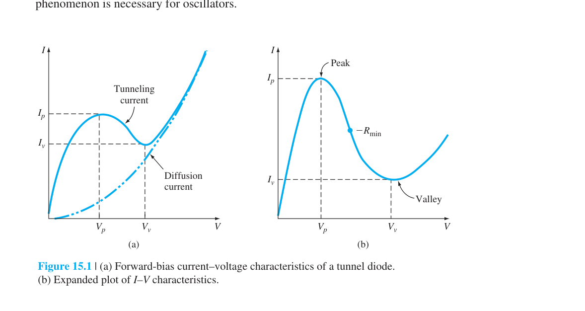
① 零偏壓：n 側導帶的電子與 p 側價帶的空態對齊，穿隧雙向進行，淨電流為零。
② 小順向偏壓（$0 < V < V_P$）：外加電壓使 n 側導帶底與 p 側價帶中的空態對齊——最大數量的電子態與空態重疊→穿隧電流隨 $V$ 增大而增大，達到峰值電流 $I_P$。典型值：$I_P \approx 1\text{--}100\ \text{mA}$，$V_P \approx 0.05\text{--}0.15\ \text{V}$。
③ 負微分電阻區（$V_P < V < V_V$）：這是本章最核心的物理現象。當偏壓繼續增大，n 側導帶底開始高於 p 側價帶頂→可穿隧的態逐漸減少→電流反而下降。這就是負微分電阻（Negative Differential Resistance, NDR）——$dI/dV < 0$。電流從 $I_P$ 降到谷值電流 $I_V$。
④ 谷值區（$V \approx V_V$）：穿隧幾乎停止（沒有重疊的態），但普通熱離子發射擴散電流開始增大。典型 $V_V \approx 0.3\text{--}0.6\ \text{V}$。
⑤ 大偏壓（$V > V_V$）：普通 pn 二極體的擴散電流主導——$I \propto e^{eV/kT}$。
等效電路與截止頻率
當穿隧二極體偏壓在 NDR 區的最小負電阻點 $-R_{\min}$ 時，其小訊號等效電路如圖 15.2（p.697）：一個負電阻 $-R_{\min}$ 與接面電容 $C_j$ 並聯，然後串聯寄生電感 $L_p$ 和寄生電阻 $R_p$。
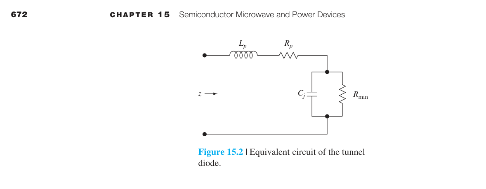
小訊號輸入阻抗可寫為：
阻抗的電阻部分在某一頻率歸零。令 $\text{Re}(Z) = 0$，解出最大電阻截止頻率：
當 $f > f_r$，電阻部分變為正值→二極體失去 NDR 特性→無法振盪。因此振盪頻率必須 $f_o < f_r$。
穿隧過程的優缺點
穿隧是多數載子效應——不涉及少數載子的擴散、儲存、或復合→沒有擴散電容 $C_d$ 的時間延遲。這使穿隧二極體可工作在 >100 GHz 的頻率，切換時間 ∼ps 量級。然而，NDR 區域的電壓範圍很窄（∼0.3 V），輸出功率有限（∼mW），且需要精確的偏壓控制和阻抗匹配。在實際應用中，穿隧二極體已被其他微波元件（如 HEMT、HBT）部分取代，但其量子穿隧原理仍是超高速元件的設計基石。
15.2 甘恩二極體 (Gunn Diode / Transferred-Electron Device)
負微分遷移率——源自能帶結構的 NDR
Gunn Diode 的 NDR 機制完全不同於 Tunnel Diode。它不是來自量子穿隧，而是來自半導體能帶結構中多個導帶谷之間電子轉移導致的負微分遷移率（negative differential mobility）。這個現象被稱為 Ridley-Watkins-Hilsum（RWH）機制。Gunn Diode 最關鍵的特徵是——它不需要 pn 接面，只是一個 n 型 GaAs 兩端元件。NDR 本質上是材料特性（負微分遷移率），而非元件結構特性（如 Tunnel Diode 的 $dI/dV < 0$）。
GaAs 的雙谷能帶結構——負微分遷移率的根源
Ch5 §5.2 展示了 GaAs 中電子漂移速度對電場的特性曲線：速度先隨電場線性增加（低場遷移率 $\mu_n \approx 8000\ \text{cm}^2/\text{V-s}$），在臨界電場 $E_{th} \approx 3.2\ \text{kV/cm}$ 達到峰值速度 ∼$2 \times 10^7\ \text{cm/s}$，然後下降到約 $10^7\ \text{cm/s}$ 的飽和值——這就是負微分遷移率區域。
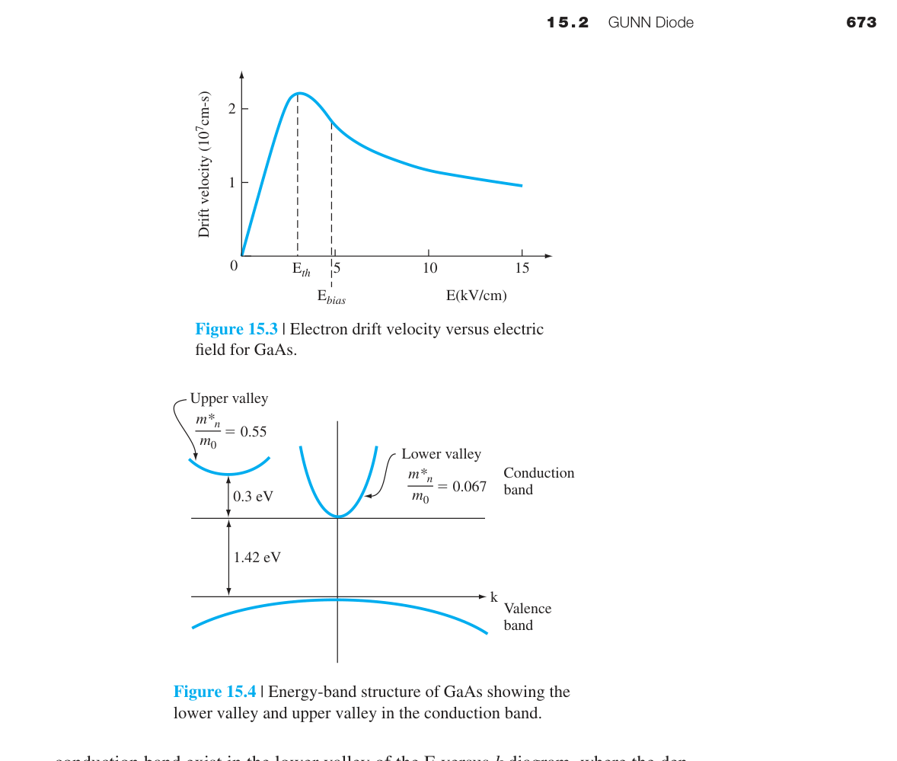
這個行為的物理根源在 GaAs 的導帶結構（圖 15.4）：
- 下谷（lower valley, $\Gamma$ valley）：位於 $k = 0$，電子有效質量小（$m_n^* = 0.067m_0$）→遷移率高。能隙 $E_g = 1.42\ \text{eV}$。
- 上谷（upper valley, L valley）：能量比下谷高約 $0.3\ \text{eV}$，有效質量大（$m_n^* \approx 0.55m_0$）→遷移率低。
當電場 $E < E_{th}$：幾乎所有電子在下谷→高遷移率→高漂移速度。當 $E > E_{th}$：電子從電場獲得足夠動能（>$0.3\ \text{eV}$），被散射到上谷→在上谷中有效質量大→遷移率低→平均漂移速度反而下降。最大負微分遷移率在 GaAs 中約為 $-2400\ \text{cm}^2/\text{V-s}$。
Domain 的形成——介電弛豫時間的關鍵角色
考慮一個兩端 n 型 GaAs 元件，偏壓在負遷移率區（$E_{\text{bias}} > E_{th}$）。陰極附近若有微小電荷擾動（通常由接觸或摻雜不均勻引起），該處的電場略高於周圍。Ch6 告訴我們，半導體中淨電荷密度的時間行為為：
其中 $\tau_d = \epsilon/\sigma$ 是介電弛豫時間常數（dielectric relaxation time），通常 ∼ps 量級。正常情況下（$\sigma > 0$），空間電荷會快速被中和。
但在負遷移率區，$\sigma = e n \mu$ 中 $\mu < 0$→$\sigma < 0$→$\tau_d < 0$→指數的符號反轉：
空間電荷不但不衰減，反而隨時間增長！這個增長的空間電荷區域稱為domain（畴）。Domain 內的電場持續增大，而 domain 外的電場隨之降低——可能降到 $E_{th}$ 以下。這保證了材料中同一時間只存在一個 domain（因為只有 domain 內的 $E$ 仍在 $>E_{th}$）。
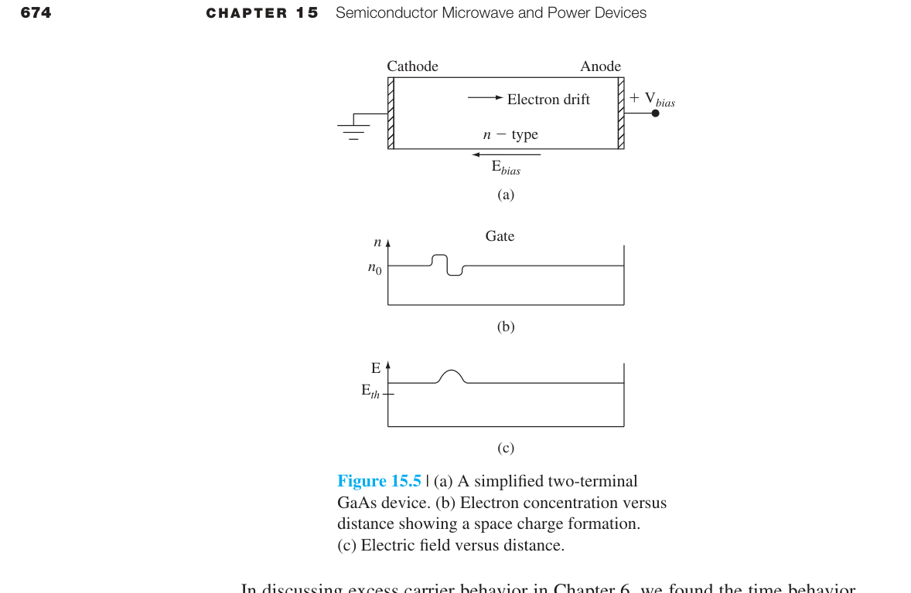
Transit-Time 振盪模式
Domain 在陰極附近形成後，以載子的平均漂移速度 $v_d$ 向陽極移動。當 domain 到達陽極時，在外電路中感應出一個電流脈衝。Domain 到達陽極消失後，陰極附近又可以形成新的 domain，如此週而復始。
振盪頻率由 domain 的渡越時間決定：
其中 $v_d$ 是平均漂移速度（∼$10^7\ \text{cm/s}$），$L$ 是漂移區長度。
效能與應用
Gunn Diode 的 DC-to-RF 轉換效率最高約 10%，振盪頻率範圍 1–100 GHz 以上。脈衝操作模式下可輸出數百瓦的峰值功率。典型應用包括微波雷達系統、汽車防撞雷達（77 GHz）、微波信號源。$n_0 L$ 乘積（摻雜濃度 × 漂移區長度）需控制在 ∼$10^{12}\ \text{cm}^{-2}$ 量級以獲得最佳效率——摻雜過低則 domain 無法形成，過高則 domain 過多。
15.3 IMPATT 二極體 (IMPact ionization Avalanche Transit-Time)
動態負電阻——時間延遲產生的負電阻
IMPATT 二極體的 NDR 機制又是第三種不同的物理。它既不靠穿隧（Tunnel Diode），也不靠能谷轉移（Gunn Diode），而是靠撞擊游離的累積時間延遲 + 載子渡越漂移區的延遲，使電流的交流分量與電壓的交流分量之間產生 180° 的相位差——產生動態負電阻（dynamic negative resistance）。IMPATT 提供所有半導體微波元件中最高的連續輸出功率（∼10 W CW），雖然代價是較高的雪崩雜訊。
元件結構與電場分布
一個典型的 IMPATT 結構是 $\text{p}^+\text{-n-i-n}^+$（圖 15.7–15.8，p.700）。逆向偏壓使 n 區和 i（intrinsic）區完全空乏。電場分布為：在 $\text{p}^+\text{-n}$ 接面處電場最高（撞擊游離的雪崩區），在 i 區中電場接近常數（漂移區）。外加逆向偏壓 $V_B$ 接近崩潰電壓。
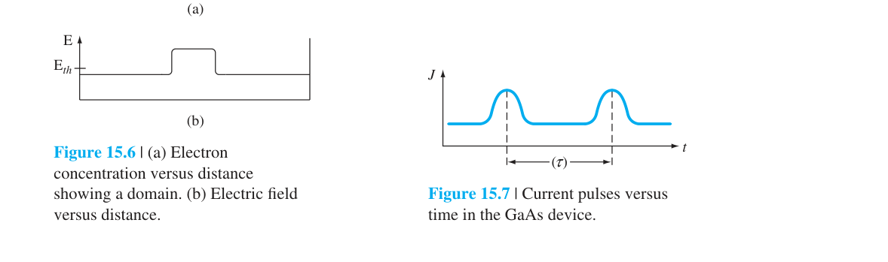
撞擊游離的物理在 Ch12 §12.4.6 已經討論過：高電場下載子獲得足夠動能，與晶格原子碰撞產生電子-電洞對。IMPATT 的操作把撞擊游離從「需要避免的破壞機制」變成「有用的振盪機制」。
動態負電阻的產生——雙重 $\pi/2$ 相位延遲
IMPATT 的核心概念是時間延遲導致電流與電壓反相：
步驟 1 — 正半週：AC 電壓為正→二極體進入崩潰→$\text{p}^+\text{-n}$ 接面處產生大量電子-電洞對。但雪崩是一個累積過程——載子數量不會瞬間跟上電壓，而是以指數增長。這產生第一個 ∼$\pi/2$ 的相位延遲：雪崩電流峰值落後雪崩電壓峰值約 90°。
步驟 2 — 漂移：產生的電洞以飽和速度 $v_s$ 漂移通過 i 區（長度 $L$）。渡越時間為 $\tau = L/v_s$。第二個 ∼$\pi/2$ 的相位延遲來自漂移過程。
步驟 3 — 總相位差：$\pi/2$（雪崩）$+ \pi/2$（漂移）$= \pi$→AC 電流與 AC 電壓在輸出端反相→這就是動態負電阻。
振盪頻率與設計
最佳振盪頻率對應於漂移區渡越時間：
其中 $v_s$ 是載子飽和速度（Si 中 ∼$10^7\ \text{cm/s}$），$L$ 是漂移區長度。
IMPATT vs Tunnel vs Gunn 對照表
| 特性 | Tunnel Diode | Gunn Diode | IMPATT Diode |
|---|---|---|---|
| NDR 來源 | 量子穿隧（$dI/dV<0$） | 能谷轉移（負遷移率） | 時間延遲（動態負電阻） |
| 結構 | $\text{p}^+\text{-n}^+$ 接面 | n 型 GaAs 兩端元件 | $\text{p}^+\text{-n-i-n}^+$ |
| 頻率範圍 | ∼1–100 GHz | ∼1–100 GHz | ∼1–300 GHz |
| 輸出功率 | 低（∼mW） | 中（∼W） | 高（∼10 W CW） |
| 效率 | 低 | ∼10% | ∼10–15% |
| 雜訊 | 低 | 中 | 高（雪崩雜訊） |
15.4 功率雙極性電晶體 (Power BJT)
從訊號放大到功率處理——BJT 在極限條件下的物理
Ch12 討論 BJT 時，我們假設電晶體可承受任意電流和電壓。但真實世界中，功率 BJT 有明確的物理極限：最大電流（導線熔斷）、最大電壓（崩潰）、最大功率（熱損壞）。更微妙的是，這些極限不能同時達到——操作點必須在安全操作區（SOA）內。功率 BJT 的核心設計方向是：通過垂直結構實現耐高壓，通過寬基區防止 punch-through，但這兩者都犧牲了電流增益——這引出 Darlington pair 等補償方案。
垂直結構——為什麼 Collector 在底部？
功率 BJT 採用垂直 npn 結構而非平面結構。Emitter 在頂部，Base 在中間，Collector 在底部。這樣的好處是：① 最大化電流流動的截面積→可處理大電流；② 熱量從接面直接傳到封裝散熱片→散熱效率高。
關鍵的 Collector 漂移區（drift region）具有低摻雜濃度（$N_C \sim 10^{14}\ \text{cm}^{-3}$）和大寬度（50–200 µm）。低摻雜使空乏區主要向 Collector 側延伸→可承受大逆向偏壓而不崩潰。寬度需要夠大以防止 punch-through——Base-Collector 空乏區穿透 Base 區到達 Emitter（Ch12 §12.4.5）。基區也比小訊號 BJT 寬得多（∼5–20 µm），同樣是為了防止 punch-through。
電流增益的權衡
寬基區的直接代價是電流增益 $\beta$ 大幅降低。小訊號 BJT 的 $\beta$ 可達 100–500；功率 BJT 的 $\beta$ 通常只有 5–100，而且隨集極電流和溫度強烈變化。這是因為寬基區中少數載子復合增多→基極傳輸因子 $\alpha_T$ 降低→$\beta$ 降低。
另一個限制是射極電流擁擠效應（emitter current crowding）：基極電阻造成的橫向壓降使得射極邊緣的電流密度遠高於中心。功率 BJT 使用交指式結構（interdigitated structure，圖 15.11，p.703）來緩解——把射極分成多個窄條，增大周長對面積比，使電流分布更均勻。

安全操作區 (SOA) —— 功率 BJT 的「護照」
SOA 是 $I_C$–$V_{CE}$ 平面上電晶體可以安全操作的區域，由四條邊界定義（圖 15.12，p.704）：

- $I_{C,\max}$（最大電流界限）：由金屬導線的熔斷電流、$\beta$ 降至最低可接受值時的電流、或飽和區最大功耗對應的電流決定。
- $V_{CE,\text{sus}}$（最大電壓界限）：維持崩潰的最小電壓（sustaining voltage）。在共射極組態下，崩潰電壓 $BV_{CEO}$ 受 $\beta$ 影響——$BV_{CEO} = BV_{CBO} / \beta^{1/n}$（$n \approx 3$–6）。$\beta$ 越大→$BV_{CEO}$ 越低。
- $P_T$（最大功率界限）：$P_T = V_{CE} I_C$。在 $I_C$–$V_{CE}$ 圖上是一條雙曲線。功率限制來自接面溫度——矽元件的最大接面溫度通常為 150–200°C。
- 二次崩潰（Second Breakdown）界限：高電壓高電流下，局部電流不均勻→局部發熱→少數載子增加→電流更集中→正回授→局部熔融短路。這是功率 BJT 最致命的失效模式。
Darlington Pair —— 解決低 $\beta$ 的工程方案
功率 BJT 的 $\beta$ 小，要驅動大集極電流需要可觀的基極電流。Darlington pair（圖 15.17，p.707）把兩個 BJT 串接：$Q_A$（驅動級）的射極電流驅動 $Q_B$（輸出級）的基極。
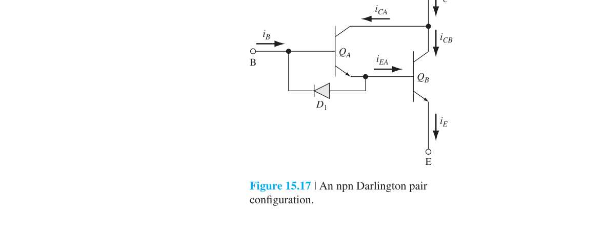
等效 $\beta_{\text{eff}} \approx \beta_A \beta_B$。若 $\beta_A = \beta_B = 15$，則 $\beta_{\text{eff}} \approx 255$——用兩個低增益元件獲得高增益。
熱效應與熱失控
功率 BJT 的致命弱點是熱失控（thermal runaway）——$\beta$ 和 $I_{CBO}$ 都隨溫度升高而增大（$I_S \propto T^3 e^{-E_g/kT}$）→溫度升高→$I_C$ 增大→功耗增加→溫度更高→正回授直到元件燒毀。功率 BJT 設計必須包含充分的散熱片和被動冷卻來打斷這個正回授迴圈。這也是功率 MOSFET 藉由正溫度係數佔據優勢的關鍵切入點。
15.5 功率 MOSFET
電壓控制與正溫度係數——MOSFET 的功率優勢
功率 MOSFET 繼承了普通 MOSFET（Ch10–11）的電壓控制優點——高輸入阻抗使閘極驅動電流極小。但它在功率領域真正的殺手級優勢來自溫度係數的方向：$\mu \propto T^{-3/2}$（Ch5 §5.1）→$R_{\text{on}}$ 隨溫度升高→負回授→天然並聯穩定。這與功率 BJT 的熱失控正回授形成鮮明對比，是現代功率電子以 MOSFET 為主的根本原因。
垂直結構：DMOS 與 VMOS
為同時實現大電流（寬通道）和高耐壓（垂直結構），功率 MOSFET 採用兩種主要結構：
DMOS（Double-Diffused MOS，圖 15.20）：p-base 和 $\text{n}^+$ source 通過同一個閘極邊緣定義的窗口進行兩次擴散。p-base 擴散比 $\text{n}^+$ source 更深，兩者橫向擴散距離之差定義了表面通道長度。電子從 source 橫向流過反轉層通道，然後垂直穿過 n-drift 區到達 drain。這是目前最主流的功率 MOSFET 結構。
VMOS（V-groove MOS，圖 15.21）：在 (100) 矽表面蝕刻出 V 形槽（利用 (111) 面蝕刻速率極慢的各向異性蝕刻），閘極氧化層和金屬閘極沉積在 V 槽中。通道沿 V 槽側壁形成。
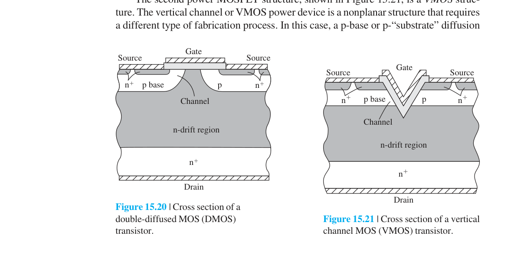
HEXFET：DMOS 的多胞並聯版本——六角形排列的小 DMOS 單元，密度可達 $10^5\ \text{cells/cm}^2$。大量單元並聯等效於極大的 $W/L$ 比。
導通電阻 $R_{\text{on}}$ —— 功率 MOSFET 的核心參數
$R_{\text{on}}$ 是 drain-to-source 導通時的總電阻，由多個分量串聯而成（圖 15.23，p.711）：
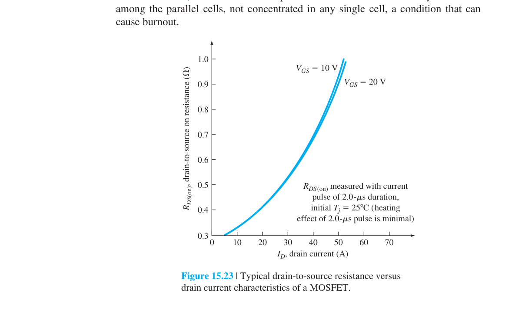
其中 $R_S$ 是 source 接觸和 $\text{n}^+$ 區電阻，$R_{\text{CH}}$ 是通道電阻，$R_D$ 是 drain 漂移區電阻（包括 substrate 電阻）。在線性區：
$R_D$ 往往佔 $R_{\text{on}}$ 的最大份額——因為 n-drift 區需要低摻雜（耐高壓）但這使電阻率增大。這是功率 MOSFET 設計的核心權衡：高耐壓 ↔ 低 $R_{\text{on}}$。對於給定耐壓的 Si MOSFET，$R_{\text{on}} \propto BV^{2.5}$——耐壓翻倍，$R_{\text{on}}$ 約增為 5.7 倍。
正溫度係數——功率 MOSFET 的殺手級優勢
遷移率隨溫度升高而降低：$\mu \propto T^{-3/2}$（晶格散射主導時）。因此：
這是一個負回授！它提供天然的熱穩定性：如果某個並聯單元電流偏大→該單元發熱→$R_{\text{on}}$ 增高→電流自動向其他單元分流→電流均勻分布。這與功率 BJT（$\beta$ 隨溫度升高而增大→正回授→熱失控）形成鮮明對比。
寄生 BJT 與 Snapback Breakdown
垂直功率 MOSFET 的結構中內建了一個寄生 npn BJT（圖 15.26，p.714）：$\text{n}^+$ source 是 Emitter，p-base 是 Base，n-drift drain 是 Collector。在正常穩態操作中，source 金屬化同時覆蓋 $\text{n}^+$ 和 p-base→B-E 短路→寄生 BJT 截止。
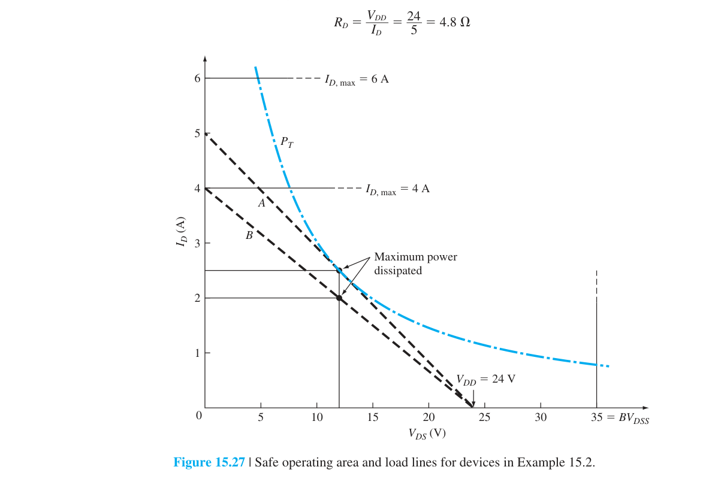
但在高速開關時，$C_{gd}$ 的位移電流流過 p-base 的寄生電阻→產生壓降→可能使 B-E 順偏→寄生 BJT 導通→大電流→燒毀。這稱為snapback breakdown。元件設計需最小化 p-base 的寄生電阻（例如使用 $\text{p}^+$ 深擴散）。
MOSFET 的 SOA
功率 MOSFET 的 SOA 也由三條邊界定義：
- $I_{D,\max}$：最大額定 drain 電流
- $BV_{DSS}$：drain-to-source 崩潰電壓
- $P_T = V_{DS} I_D$：最大功率雙曲線
與 BJT 不同，MOSFET 沒有二次崩潰（因為沒有少數載子參與的熱正回授機制）→SOA 只用三條線就能完整定義。
• BJT：電流控制，$\beta$ 小（∼10–50），需要大基極驅動電流；$\beta$ 隨溫度升高→熱失控風險；有二次崩潰；但飽和壓降 $V_{CE,\text{sat}}$ 低（∼0.2–0.5 V）。
• MOSFET：電壓控制，輸入阻抗極高；$R_{\text{on}}$ 隨溫度升高→天然穩定；無二次崩潰；開關速度遠快於 BJT；但 $R_{\text{on}}$ 使導通壓降可能大於 BJT（特別是高耐壓元件）。
• 現代趨勢：600 V 以下以 MOSFET 為主；1200 V 以上 Si IGBT（結合 MOSFET 輸入 + BJT 輸出的混合元件）主導。
15.6 閘流體 (Thyristor / SCR)
雙穩態鎖定——再生正回授的物理極致
Thyristor 展示了半導體物理中最精巧的正回授設計：將兩個 BJT 交叉耦合，創造出具有雙穩態（bistable）的四層 pnpn 開關元件。一旦觸發導通，它會鎖住在導通狀態——不需要維持控制信號。這是與 BJT（需要持續基極驅動）和 MOSFET（需要持續閘極電壓）最根本的區別。Thyristor 的物理本質可以濃縮在一個關鍵公式中：$I_A = (I_{C01}+I_{C02})/[1-(\alpha_1+\alpha_2)]$——分母趨於零就是相變點。
基本 pnpn 結構與阻斷特性
四層 pnpn 結構（圖 15.29，p.716）有三個接面：$J_1$（p1-n1）、$J_2$（n1-p2）、$J_3$（p2-n2）。陽極接 p1，陰極接 n2。當陽極施加正電壓（順向偏壓）：$J_1$ 和 $J_3$ 順偏，但 $J_2$ 逆偏→只有很小的漏電流→元件處於順向阻斷狀態。當陽極施加負電壓（逆向偏壓）：$J_1$ 和 $J_3$ 逆偏→逆向阻斷狀態。
雙電晶體等效模型——再生正回授的數學
把 pnpn 結構從中間分開（圖 15.30），可以等效為耦合的 pnp 和 npn BJT。pnp 的 collector 是 npn 的 base，npn 的 collector 是 pnp 的 base——這創造了完美的交叉耦合正回授。
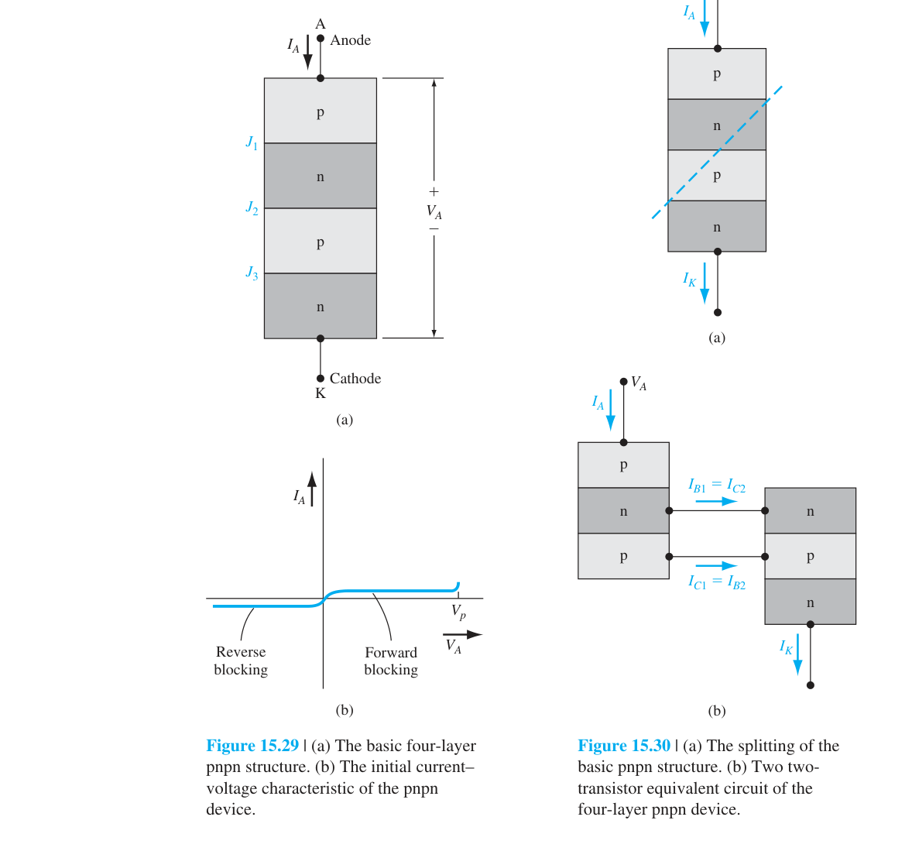
令 $\alpha_1$ 和 $\alpha_2$ 分別為 pnp 和 npn 的共基極電流增益，$I_{C01}$ 和 $I_{C02}$ 為其反向飽和電流。基本電流關係為：
注意到 $I_A = I_K$，且 $I_{C1} + I_{C2} = I_A$。相加兩式：
整理得到閘流體的核心方程式：
這就是 SCR 的靈魂。當 $\alpha_1 + \alpha_2 \ll 1$：$I_A \approx I_{C01} + I_{C02}$——很小的漏電流→阻斷狀態。當 $\alpha_1 + \alpha_2 \to 1$：分母趨近於零→$I_A$ 急劇增大→導通狀態。$\alpha_1 + \alpha_2 = 1$ 就是切換條件。
Thyristor I-V 特性
圖 15.31（p.718）展示了完整的閘流體 I-V 特性：順向阻斷區（低電流、高電壓）→在 $V_{BO}$（breakover voltage）處急劇切換到導通狀態（低電壓、大電流）→逆向阻斷區（負電壓）。關鍵參數包括：$V_{BO}$（正向轉折電壓）、$I_H$（維持電流，holding current）——陽極電流低於此值即回復阻斷狀態。
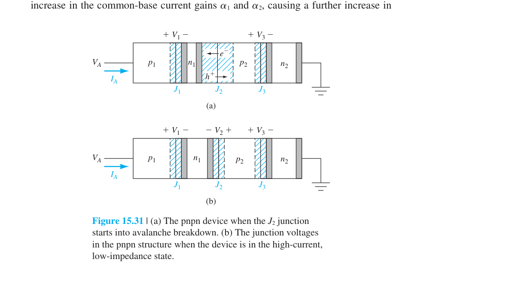
觸發機制
SCR 可通過多種方式從阻斷狀態切換到導通狀態：
① 崩潰觸發（Breakdown Triggering）：陽極電壓超過 $J_2$ 的崩潰電壓 $V_P$→撞擊游離產生大量電子-電洞對→等效於注入 base 電流→啟動正回授。這是二端 thyristor 的觸發方式。
② 閘極觸發（Gate Triggering）：在三端 SCR 中（圖 15.33，p.720），對 p2 區注入閘極電流 $I_g$（電洞）。包含 $I_g$ 的推導得到：
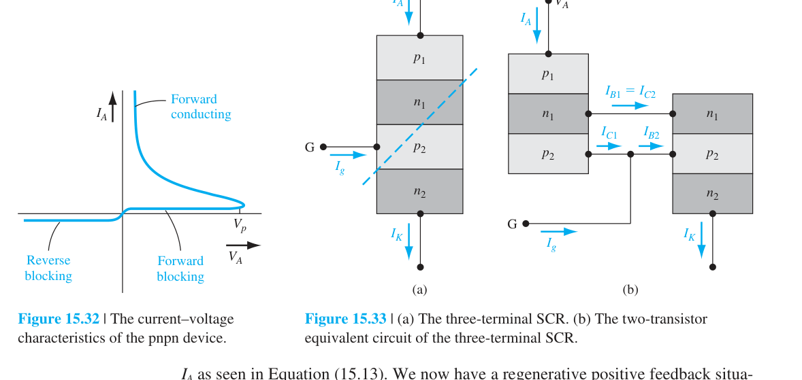
$I_g$ 增大→$\alpha_2 I_g$ 使分子增大→$I_A$ 增大→$\alpha_1, \alpha_2$ 增大→正回授啟動。閘極電流只需數 mA 就能控制數百 A 的陽極電流——這是 SCR 最實用的觸發方式。
③ $dV/dt$ 觸發：快速變化的陽極電壓→$J_2$ 空乏區寬度變化→位移電流→等效閘極電流→可能意外觸發。這是寄生 thyristor 在 CMOS 電路中造成 latch-up 的常見機制。
④ 光觸發：光照產生電子-電洞對（特別在 $J_2$ 附近）→光電流等效於閘極電流。光觸發 SCR（LASCR）用於高壓隔離應用。
截止（Turn-Off）
SCR 一旦導通，閘極失去控制權。要關斷 SCR，必須將陽極電流降到維持電流（holding current）以下——使得 $\alpha_1 + \alpha_2 < 1$ 不再成立→正回授崩潰→回復阻斷狀態。在 AC 應用中，SCR 在電流自然過零時自動關斷。
Triac —— 雙向閘流體
Triac（圖 15.38，p.722）相當於兩個反並聯的 SCR 集成在單一晶片上，可雙向導通——適用於 AC 功率控制（如調光器、馬達控制）。Triac 可被任一極性的閘極信號觸發，且可在 AC 的正負半週導通。
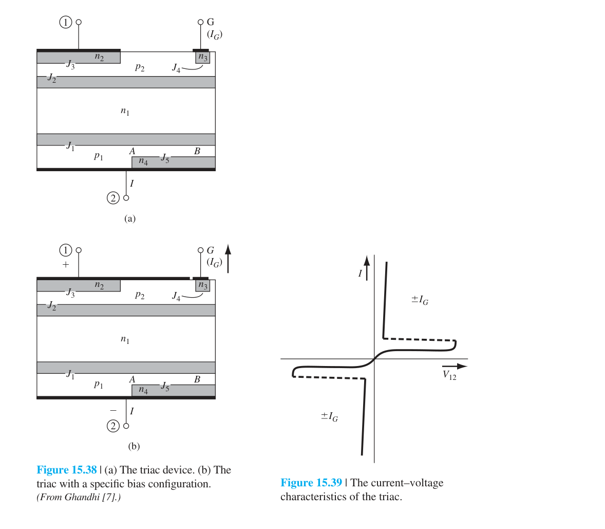
MOS-Gated Thyristor
MOS 閘控閘流體用 MOS 結構來控制 npn BJT 的基區寬度：正閘極電壓使 p-base 表面空乏→有效基區寬度 $W^*$ 變窄→$\beta$ 增大→觸發導通。這結合了 MOS 的高輸入阻抗和 thyristor 的鎖存能力。MOS Turn-Off Thyristor 更進一步——以負閘極電壓導通 p-channel MOSFET 來短路 npn 的 B-E 接面→實現閘極可控關斷。
| Thyristor 類型 | 特徵 | 應用 |
|---|---|---|
| SCR（二端/三端） | 單向導通，閘極觸發 | 相位控制、過壓保護 |
| Triac | 雙向導通，雙極性閘極 | 調光器、AC 馬達控制 |
| MOS-Gated Thyristor | MOS 輸入 + thyristor 鎖存 | 高功率開關 |
| MOS Turn-Off Thyristor | 閘極可控關斷 | 智慧功率模組 |
🧪 互動模型：功率／高頻半導體材料比較
展開互動模型收合互動模型比較 Si、GaAs、4H-SiC、GaN 的材料性質與 FOM 指標
15.7 本章總結
三種微波元件 — 三種不同的 NDR 物理
- Tunnel Diode（穿隧二極體）：極重摻雜→空乏區極窄（∼50 Å）→量子穿隧主導電流→$dI/dV < 0$（DC 意義的 NDR）。截止頻率 $f_r = \frac{1}{2\pi R_{\min}C_j}\sqrt{R_{\min}/R_p - 1}$。多數載子效應→無擴散延遲→可達 >100 GHz。
- Gunn Diode（甘恩二極體）：GaAs 雙谷導帶→高場下電子從高遷移率下谷轉移到低遷移率上谷→負微分遷移率→domain 形成與渡越→振盪頻率 $f = v_d/L$。不需要 pn 接面。
- IMPATT Diode：撞擊游離雪崩區 + 漂移區→$\pi/2$（雪崩累積延遲）$+ \pi/2$（漂移渡越延遲）$= \pi$ 相位差→動態負電阻。振盪頻率 $f = v_s/(2L)$。$dI/dV$ 永遠為正（DC 意義）。是所有微波半導體元件中輸出功率最高的。
三種功率元件 — 共同的物理極限
- Power BJT：垂直 npn 結構，寬基區→低 $\beta$（∼5–100），Darlington pair 補償。SOA 由 $I_C,\max$、$V_{CE,\text{sus}}$、$P_T$、二次崩潰界定。熱失控是致命問題（$\beta$ 隨溫度升高→正回授）。
- Power MOSFET：DMOS/VMOS 垂直結構，$R_{\text{on}} = R_S + R_{\text{CH}} + R_D$。$R_{\text{on}}$ 隨溫度升高→負回授→天然並聯穩定。寄生 BJT 在高速開關時可能觸發 snapback。SOA 無二次崩潰。開關速度遠快於 BJT。
- Thyristor (SCR)：pnpn 四層結構，雙電晶體正回授模型→$I_A = (I_{C01}+I_{C02})/[1-(\alpha_1+\alpha_2)]$。$\alpha_1+\alpha_2\to 1$ 時鎖定導通。閘極觸發、$dV/dt$ 觸發、光觸發。維持電流以下才能關斷。Triac = 雙向 SCR。
核心物理洞察
- 微波元件與功率元件不是「新物理」，而是前面所有章節的物理在極端條件下的變形——穿隧、速度飽和、撞擊游離、寄生 BJT、再生正回授。
- Tunnel / Gunn / IMPATT 的共同點只有「都能振盪」，物理機制完全不同。考試常考三者 NDR 來源的區別。
- 功率元件的關鍵不是理想 I-V，而是結構（垂直→耐壓+大電流）、熱（SOA 雙曲線）、寄生（snapback、latch-up）。
- Thyristor 的靈魂是 $1-(\alpha_1+\alpha_2)$ 在分母——這不只是公式，而是從阻斷到導通的相變條件。
• Tunnel Diode：最大電阻截止頻率 $f_r$ 的公式推導
• Gunn Diode：GaAs 雙谷能帶 → 負微分遷移率 → domain → $f = v_d/L$
• IMPATT：為什麼是「動態」負電阻而非 DC 負電阻？雙重 $\pi/2$ 相位延遲
• Power BJT：SOA 四邊界，Darlington pair $\beta_{\text{eff}}$
• Power MOSFET：$R_{\text{on}}$ 的正溫度係數 → 並聯穩定性
• SCR：$I_A$ 推導，$\alpha_1+\alpha_2 = 1$ 觸發條件，閘極失去控制權
本章學習資源
推導、假設與章末診斷
各模型不可混用的假設
- Tunnel diode 的負微分電阻是偏壓點附近的小訊號量；振盪條件還需負電導大於諧振器與負載損耗。
- Gunn transit 模型 $f\sim v_d/L$ 假設形成穩定高場 domain 並以近似固定速度通過有效區。
- IMPATT 模型要求雪崩建立與漂移渡越提供接近 $\pi$ 的總相位延遲；它是動態而非必然的 DC 負電阻。
- 功率元件 $P=I^2R$ 與熱阻模型多採穩態平均值；切換瞬間須加入 $E_{on},E_{off}$、寄生電感與暫態熱阻。
- SCR 二電晶體模型假設可用 $\alpha_1,\alpha_2$ 描述耦合；實際觸發還受分布電阻、載子壽命與溫度影響。
中間推導：三個工程尺度
- Gunn：domain 渡越時間 $\tau=L/v_d$，基本頻率 $f\sim1/\tau=v_d/L$。
- 功率 MOSFET：$R_{DS(on)}=\sum_iR_i$，導通平均損耗 $P_{cond}=I_{rms}^2R_{DS(on)}$。
- SCR：$I_A=\alpha_1I_A+\alpha_2I_A+I_{CBO1}+I_{CBO2}+I_G$。
- 整理得 $I_A=[I_{CBO1}+I_{CBO2}+I_G]/[1-(\alpha_1+\alpha_2)]$；分母趨近零代表再生鎖定。
章末練習與概念診斷
Tunnel、Gunn、IMPATT 都有負電阻，是否能用同一物理模型？
不能：分別源於量子穿隧、能谷轉移造成的負微分遷移率，以及雪崩加渡越相位延遲。
SOA 為何不是由最大電壓乘最大電流形成矩形？
電流、電壓、功耗、熱與二次崩潰限制互相耦合；最大額定值通常不能同時達到。
延伸計算練習
完成上方診斷後，請在不查公式的情況下重建代表推導，並改變一個參數檢查極限行為。更多含數值與解答的題目：本章完整習題頁。